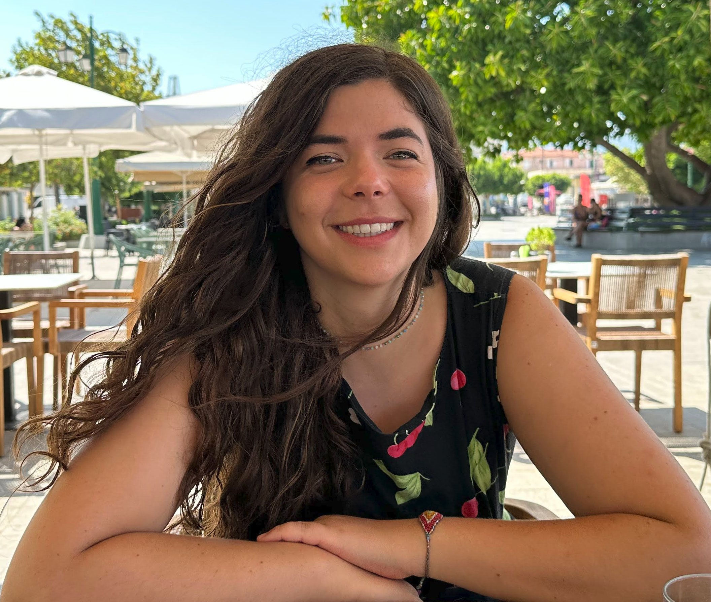
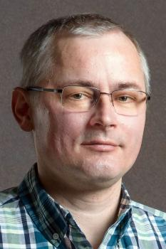
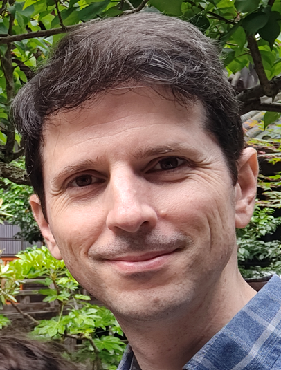

Keynote Speakers
International Confenernce on Parsing Technologies (IWPT)

Kempner Institute for the Study of Natural and Artificial Intelligence at Harvard University
Tuesday, 26. August 2025
Title:
What can we learn from language models?
Abstract:
This talk will examine how linguistic theory can benefit from the recent surprising successes of language models in modeling human language production. Language models provide linguists with an unprecedented empirical tool to expand and test our theoretical hypotheses about language. I will go over two main methodologies for taking advantage of language models as an empirical tool. Firstly, examining language model internals as functional theories for how linguistic information can be represented in ways that lead to linguistic capabilities. Secondly, using model training as an empirical testbed, examining what kinds of environments make statistical language learning possible or harder. Both methodologies showcase the importance of developing empirical paradigms that narrow the gap between computational methods and linguistic concerns in order to make language models able to help us expand theoretical horizons.
Bio:
Isabel Papadimitriou is a Kempner Fellow at the Kempner Institute for the Study of Natural and Artificial Intelligence at Harvard, and incoming as an assistant professor of linguistics at the University of British Columbia. She is interested in analyzing how large language models learn and represent abstract structural systems, and in how experiments on language models can help enrich the hypothesis space around what makes the learning and representation of language possible.
Universal Dependencies Workshop (UDW)
KU Leuven, Belgium
Wednesday, 27. August 2025
Title:
Typologically informed NLP evaluation
Abstract:
NLP has a long history of focusing mainly on English. While increasing efforts are being made towards making language technology more multilingual, English remains the language on which NLP technology is developed first, and applied to other languages next, which inevitably leads to degraded performance compared to English. This talk is about reversing this trend and putting multilinguality at the core of NLP, rather than at the periphery. I describe how typology can inform NLP evaluation, using our recently proposed language sampling framework. A strong limitation of the approach is the state of multilingual datasets, which tend to lack coverage, be machine-translated or have questionable quality. UD is an exception, and I emphasize the role it can play in establishing best practices in multilingual NLP evaluation.
Bio:
Miryam de Lhoneux is an assistant professor in the department of Computer Science at KU Leuven in Belgium, researching and teaching Natural Language Processing. She heads the LAGoM NLP lab where the focus is on multilingual and interpretable models. Previously, she was a postdoc at the University of Copenhagen in Denmark. She has a PhD from Uppsala University, Sweden, an MSc in Artificial Intelligence from the University of Edinburgh, UK, and a BA and MA in languages and literatures from UCLouvain, Belgium.
International Conference on Dependency Linguistics (DepLing)

Charles University, Prague
Thursday, 28. August 2025
Title:
Auxiliaries across Languages and Frameworks
Abstract:
In my talk, I will discuss the status of auxiliaries (i.e., auxiliary verbs as well as uninflected non-verbal particles with auxiliary function) in dependency treebanks. The focus will be on two frameworks, Universal Dependencies (UD) and the Prague family of treebanks, rooted in the Functional Generative Description. However, I will occasionally show examples from other treebanks and frameworks, encountered during the HamleDT harmonization effort.
Besides looking at various treatments of auxiliaries in different annotation schemes, I will also discuss the question of delimiting the set of auxiliaries in individual languages (or, more exactly, the set of words that receive the special treatment in the respective annotation schemes). Various grammatical tests may be available, but sometimes the auxiliaries are simply enumerated by traditional school grammar. Moreover, there is a scale of categories ranging from pure grammatical auxiliaries through modals and phase verbs to various semantically bleached verbs that take other verbs as complements, yet their contribution is lexical rather than grammatical and their syntactic behavior shows no anomalies. All these aspects complicate finding a unified definition that would be applicable in a multi-lingual dataset, such as HamleDT or UD.
In the last part of the talk, I will show some examples of contrastive cross-linguistic studies that would benefit from comparably defined auxiliaries. I will show how we encourage comparability in UD using a common database of auxiliaries, and I will argue that it has the potential to become a useful resource of its own.
Besides looking at various treatments of auxiliaries in different annotation schemes, I will also discuss the question of delimiting the set of auxiliaries in individual languages (or, more exactly, the set of words that receive the special treatment in the respective annotation schemes). Various grammatical tests may be available, but sometimes the auxiliaries are simply enumerated by traditional school grammar. Moreover, there is a scale of categories ranging from pure grammatical auxiliaries through modals and phase verbs to various semantically bleached verbs that take other verbs as complements, yet their contribution is lexical rather than grammatical and their syntactic behavior shows no anomalies. All these aspects complicate finding a unified definition that would be applicable in a multi-lingual dataset, such as HamleDT or UD.
In the last part of the talk, I will show some examples of contrastive cross-linguistic studies that would benefit from comparably defined auxiliaries. I will show how we encourage comparability in UD using a common database of auxiliaries, and I will argue that it has the potential to become a useful resource of its own.
Bio:
Daniel Zeman is an associate professor of computational linguistics at the Charles University in Prague. He obtained his PhD (also from Charles University) in 2005 with a dissertation on statistical methods for syntactic parsing of Czech. He then worked on cross-lingual transfer techniques for low-resource languages, and led several projects focused on multilingual NLP and harmonization of linguistic resources, including Interset (for morphological tagsets) and HamleDT (for dependency treebanks). He is one of the founders and leading personalities of the Universal Dependencies initiative, and vice-chair of the COST Action “Universality, Diversity and Idiosyncrasy in Language Technology” (UniDive). His current work extends to harmonized datasets for coreference resolution (CorefUD) and Uniform Meaning Representation (UMR).
Workshop on Treebanks and Linguistic Theories (TLT)

Georgetown University
Thursday, 28. August 2025
Title:
Subject prominence revisited: What makes entities salient?
Abstract:
In this talk, I’ll explore what makes certain entities stand out in discourse — what we might call more or less “salient” — and how speakers systematically identify them. Building on existing approaches to information structural “aboutness”, subjecthood, Centering Theory and animacy hierarchies, I argue that salience goes beyond surface categories such as definiteness, pronominalization and grammatical function. It’s also shaped by deeper structures: distributional cues, discourse relations, hierarchical organization, genre conventions, and the communicative goals we infer from context. To get at this, I use a graded notion of salience based on how often entities are included in multiple human-written summaries of a text or conversation. Drawing on manually treebanked data from 24 different spoken and written genres in English, I ask: how is salience expressed for each entity mentioned in a discourse? I’ll show that while traditional linguistic markers of salience all correlate with our salience scores to some extent, every rule has exceptions, and no single feature tells the whole story. Instead, salience cuts across all levels of linguistic structure, and the most informative theoretical model of the phenomenon must therefore combine cues from across morphosyntax, discourse structure, and functional pragmatics.
Bio:
Amir Zeldes is Associate Professor of Computational Linguistics at Georgetown University, where he runs the Georgetown University Corpus Linguistics lab, Corpling@GU. He has worked on multilayer treebank construction and evaluation, including development of the Georgetown University Multilayer corpus (GUM) and datasets for low resource languages, such as the UD Coptic Treebank. His main area of research is computational discourse modeling, working on frameworks such as Enhanced Rhetorical Structure Theory (eRST) and Graded Salience, as well as topics such as coreference resolution, genre variation and summarization. He is currently president of the ACL Special Interest Group on Annotation (SIGANN).
Workshop on Quantitative Syntax (QUASY)
The Pennsylvania State University
Friday, 29. August 2025
Title:
The rhetorical and pragmatic functions of syntactically complex structures in academic and second language writing
Abstract:
Previous studies of linguistic complexity in academic and second language (L2) writing has often focused on quantitative differences across different writer groups and/or longitudinal changes over time, without systematic attention to the rhetorical or pragmatic functions that complex forms are used to convey. This talk argues for the importance of and delineates the scope of the function dimension of linguistic complexity analysis in L2 writing research, reviews the methods and findings of emerging efforts on this dimension, and discusses how future L2 writing research could attend to this dimension.
Bio:
Xiaofei Lu is the George C. and Jane G. Greer Professor of Applied Linguistics and Asian Studies at The Pennsylvania State University. His research has long centered on computational and quantitative analyses of linguistic complexity in reading materials, second language production, and academic writing. His current work explores mappings between linguistic forms and rhetorical/pragmatic functions in language production and sense-aware measurements of linguistic complexity that account for the specific meanings of polysemous linguistic forms in context. He has published over 90 peer-reviewed articles in leading journals, including Applied Linguistics, Behavior Research Methods, Computer Assisted Language Learning, Language Learning, Studies in Second Language Acquisition, TESOL Quarterly, and The Modern Language Journal. He received the 2023 Ken Hyland Best Paper Award from the Journal of English for Academic Purposes. His latest book, Corpus Linguistics and Second Language Acquisition: Perspective, Issues, and Findings, was published by Routledge in 2023.
Local Keynote – Cancelled
University of Nova Gorica
CANCELLED
Title:
What we learn about syntax when dependencies fail: Experimental insights into syntactic locality constraints
Abstract:
This talk examines a class of syntactic dependencies that cannot be formed: classic island violations (extraction from adjuncts, complex NPs, wh-islands etc.). I survey psycho- and neurolinguistic evidence quantifying the cognitive cost of breaching locality constraints, showing how these findings expose limits on dependency formation that remain invisible in standard treebanks yet are central to real-time sentence processing. I consider implications for parsing, dependency representations, and cross-linguistic variation, with suggestions for incorporating experimental diagnostics into syntactic annotation and parser-evaluation frameworks.
Bio:
Artur Stepanov is a professor of psycholinguistics at the University of Nova Gorica. His work focuses on the cognitive representation and real-time processing of syntactic dependencies in monolingual and multilingual speakers, exploring how internal grammatical competence maps onto observable linguistic behavior. He combines psycholinguistic experimentation with insights from generative syntax, with particular emphasis on lesser-studied Slavic languages. He is involved in multiple international collaborations on projects related to sentence comprehension and production, the linguistic and cognitive dimensions of multilingualism, and, more recently, the compositional aspects of animal (marine mammal) vocalization sequences.